<math.h>FP_FAST_FMA · FP_FAST_FMAF
· FP_FAST_FMAL · FP_ILOGB0 ·
FP_ILOGBNAN · FP_INFINITE · FP_NAN · FP_NORMAL · FP_SUBNORMAL · FP_ZERO · HUGE_VAL · HUGE_VALF · HUGE_VALL · INFINITY · MATH_ERRNO · MATH_ERREXCEPT · math_errhandling · NAN
abs · acos · acosh
· asin · asinh · atan
· atanh · atan2 · cbrt
· ceil · copysign · cos
· cosh · double_t · erf
· erfc · exp · expm1
· exp2 · fabs · fdim
· float_t · floor · fma
· fmax · fmin · fmod
· fpclassify · frexp · hypot · ilogb · isfinite ·
isgreater · isgreaterequal · isinf · isless · islessequal
· islessgreater · isnan · isnormal · isunordered · ldexp · lgamma · llrint ·
llround · log · log10 ·
log1p · log2 · logb ·
lrint · lround · modf ·
nan · nearbyint · nextafter · nexttoward · pow
· remainder · remquo · rint · round · scalbln ·
scalbn · signbit · sin
· sinh · sqrt · tan
· tanh · tgamma · trunc
acosf · acoshf · asinf · asinhf · atanf ·
atanhf · atan2f · cbrtf
· ceilf · copysignf · cosf · coshf · erff · erfcf · expf · exp2f · expm1f · fabsf · fdimf ·
floorf · fmaf · fmaxf ·
fminf · fmodf · frexpf
· hypotf · ilogbf · ldexpf · lgammaf · llrintf
· llroundf · logf · log10f · log1pf · log2f ·
logbf · lrintf · lroundf
· modff · nanf · nearbyintf · nextafterf · nexttowardf · pow · remainderf · remquof · rintf
· roundf · scalblnf · scalbnf · sinf · sinhf ·
sqrtf · tanf · tanhf ·
tgammaf · truncf
acosl · acoshl · asinl · asinhl · atanl ·
atanhl · atan2l · cbrtl
· ceill · copysignl · cosl · coshl · erfl · erfcl · expl · exp2l · expm1l · fabsl · fdiml ·
floorl · fmal · fmaxl ·
fminl · fmodl · frexpl
· hypotl · ilogbl · ldexpl · lgammal · llrintl
· llroundl · logl · log10l · log1pl · log2l ·
logbl · lrintl · lroundl
· modfl · nanl · nearbyintl · nextafterl · nexttowardl · pow · remainderl · remquol · rintl
· roundl · scalblnl · scalbnl · sinl · sinhl ·
sqrtl · tanl · tanhl ·
tgammal · truncl
assoc_laguerre · assoc_legendre · beta · comp_ellint_1 · comp_ellint_2 · comp_ellint_3 · cyl_bessel_i · cyl_bessel_j · cyl_bessel_k · cyl_neumann · ellint_1 · ellint_2 · ellint_3 · expint
· hermite · laguerre · legendre · riemann_zeta · sph_bessel · sph_legendre · sph_neumann
assoc_laguerref · assoc_legendref · betaf · comp_ellint_1f · comp_ellint_2f ·
comp_ellint_3f · cyl_bessel_if ·
cyl_bessel_jf · cyl_bessel_kf ·
cyl_neumannf · ellint_1f · ellint_2f · ellint_3f · expintf · hermitef · laguerref · legendref · riemann_zetaf · sph_besself · sph_legendref · sph_neumannf
assoc_laguerrel · assoc_legendrel · betal · comp_ellint_1l · comp_ellint_2l ·
comp_ellint_3l · cyl_bessel_il ·
cyl_bessel_jl · cyl_bessel_kl ·
cyl_neumannl · ellint_1l · ellint_2l · ellint_3l · expintl · hermitel · laguerrel · legendrel · riemann_zetal · sph_bessell · sph_legendrel · sph_neumannl
Include the standard header <math.h> to declare a number of functions that
perform common mathematical operations on real floating-point values (of type float, double, or
long double).
A domain error occurs when the function is not defined for its input
argument value or values. A function can report a domain error by storing the value of EDOM in errno and returning
a particular value defined for each implementation. Or it can raise an invalid floating-point exception. The macro math_errhandling specifies whether either or both of these approaches is
taken.
A range error occurs when the return value of the function is defined
but cannot be represented. A function can report a range error by storing the value of ERANGE in errno and
returning one of several values:
HUGE_VAL -- if the value of a function returning double
is positive and too large in magnitude to representHUGE_VALF -- if the value of a function returning float
is positive and too large in magnitude to representHUGE_VALL -- if the value of a function returning long
double is positive and too large in magnitude to represent-HUGE_VAL -- if the value of a function returning double
is negative and too large in magnitude to represent-HUGE_VALF -- if the value of a function returning float
is negative and too large in magnitude to represent-HUGE_VALL -- if the value of a function returning long
double is negative and too large in magnitude to representOr it can raise an invalid floating-point exception.
The macro math_errhandling specifies whether either or both of
these approaches is taken.
The pragma:
#pragma STD FP_CONTRACT [ON|OFF|DEFAULT]
(added with C99) controls the behavior of real floating-point expression contraction. If the parameter
is ON, the translator is permitted to evaluate an expression atomically, possibly omitting
rounding errors and the raising of floating-point exceptions. If the parameter is OFF,
contraction is disallowed. The parameter DEFAULT restores the original state, which is
implementation defined. If the pragma occurs outside an external declaration, it remains in effect until
overridden by another such pragma. If the pragma occurs inside an external declaration, it must precede all
explicit declarations and statements within a compound statement. It remains in effect until overridden by
another such pragma or until the end of the compound statement.
Many of the functions declared in this header have additional
overloads in C++, which behave much like the generic
functions defined in <tgmath.h>. The following functions
have such additional overloads:
acos exp lgamma remquo acosh exp2 llrint rint asin expm1 llround round asinh fabs log scalbln atan fdim log10 scalbn atan2 floor log1p sin atanh fma logb sinh cbrt fmax lrint sqrt ceil fmin lround tan copysign fmod nearbyint tanh cos frexp nextafter tgamma cosh hypot nexttoward trunc erf ilogb pow erfc ldexp remainder
These additional overloads are added with TR1
Moreover, all functions added with TR1 also have such additional overloads in C++:
assoc_laguerre cyl_bessel_i ellint_3 sph_bessel assoc_legendre cyl_bessel_j expint sph_legendre beta cyl_bessel_k hermite sph_neumann comp_ellint_1 cyl_neumann laguerre comp_ellint_2 ellint_1 legendre comp_ellint_3 ellint_2 riemann_zeta
/* MACROS */
#define HUGE_VAL <double rvalue>
#define HUGE_VALF <float rvalue> [added with C99]
#define HUGE_VALL <long double rvalue> [added with C99]
#define INFINITY <float rvalue> [added with C99]
#define NAN <float rvalue> [added with C99]
#define FP_FAST_FMA <integer constant expression> [optional with C99]
#define FP_FAST_FMAF <integer constant expression> [optional with C99]
#define FP_FAST_FMAL <integer constant expression> [optional with C99]
#define FP_INFINITE <integer constant expression> [added with C99]
#define FP_NAN <integer constant expression> [added with C99]
#define FP_NORMAL <integer constant expression> [added with C99]
#define FP_SUBNORMAL <integer constant expression> [added with C99]
#define FP_ZERO <integer constant expression> [added with C99]
#define FP_ILOGB0 <integer constant expression> [added with C99]
#define FP_ILOGBNAN <integer constant expression> [added with C99]
#define MATH_ERRNO 1 [added with C99]
#define MATH_ERREXCEPT 2 [added with C99]
#define math_errhandling <int rvalue [0, 4)> [added with C99]
/* TYPES */
typedef f-type double_t; [added with C99]
typedef f-type float_t; [added with C99]
/* GENERIC FUNCTION MACROS [macros in C, functions in C++] */
#define signbit(x) <int rvalue> [added with C99, bool functions in C++]
#define fpclassify(x) <int rvalue> [added with C99, int functions in C++]
#define isfinite(x) <int rvalue> [added with C99, bool functions in C++]
#define isinf(x) <int rvalue> [added with C99, bool functions in C++]
#define isnan(x) <int rvalue> [added with C99, bool functions in C++]
#define isnormal(x) <int rvalue> [added with C99, bool functions in C++]
#define isgreater(x, y) <int rvalue> [added with C99, bool functions in C++]
#define isgreaterequal(x, y) <int rvalue> [added with C99, bool functions in C++]
#define isless(x, y) <int rvalue> [added with C99, bool functions in C++]
#define islessequal(x, y) <int rvalue> [added with C99, bool functions in C++]
#define islessgreater(x, y) <int rvalue> [added with C99, bool functions in C++]
#define isunordered(x, y) <int rvalue> [added with C99, bool functions in C++]
/* FUNCTIONS */
double abs(double x); [C++ only]
float abs(float x); [C++ only]
long double abs(long double x); [C++ only]
double acos(double x);
float acos(float x); [C++ only]
long double acos(long double x); [C++ only]
float acosf(float x); [required with C99]
long double acosl(long double x); [required with C99]
double asin(double x);
float asin(float x); [C++ only]
long double asin(long double x); [C++ only]
float asinf(float x); [required with C99]
long double asinl(long double x); [required with C99]
double atan(double x);
float atan(float x); [C++ only]
long double atan(long double x); [C++ only]
float atanf(float x); [required with C99]
long double atanl(long double x); [required with C99]
double atan2(double y, double x);
float atan2(float y, float x); [C++ only]
long double atan2(long double y, long double x); [C++ only]
float atan2f(float y, float x); [required with C99]
long double atan2l(long double y,
long double x); [required with C99]
double ceil(double x);
float ceil(float x); [C++ only]
long double ceil(long double x); [C++ only]
float ceilf(float x); [required with C99]
long double ceill(long double x); [required with C99]
double cos(double x);
float cos(float x); [C++ only]
long double cos(long double x); [C++ only]
float cosf(float x); [required with C99]
long double cosl(long double x); [required with C99]
double cosh(double x);
float cosh(float x); [C++ only]
long double cosh(long double x); [C++ only]
float coshf(float x); [required with C99]
long double coshl(long double x); [required with C99]
double exp(double x);
float exp(float x); [C++ only]
long double exp(long double x); [C++ only]
float expf(float x); [required with C99]
long double expl(long double x); [required with C99]
double fabs(double x);
float fabs(float x); [C++ only]
long double fabs(long double x); [C++ only]
float fabsf(float x); [required with C99]
long double fabsl(long double x); [required with C99]
double floor(double x);
float floor(float x); [C++ only]
long double floor(long double x); [C++ only]
float floorf(float x); [required with C99]
long double floorl(long double x); [required with C99]
double fmod(double x, double y);
float fmod(float x, float y); [C++ only]
long double fmod(long double x, long double y); [C++ only]
float fmodf(float x, float y); [required with C99]
long double fmodl(long double x,
long double y); [required with C99]
double frexp(double x, int *pexp);
float frexp(float x, int *pexp); [C++ only]
long double frexp(long double x, int *pexp); [C++ only]
float frexpf(float x, int *pexp); [required with C99]
long double frexpl(long double x, int *pexp); [required with C99]
double ldexp(double x, int ex);
float ldexp(float x, int ex); [C++ only]
long double ldexp(long double x, int ex); [C++ only]
float ldexpf(float x, int ex); [required with C99]
long double ldexpl(long double x, int ex); [required with C99]
double log(double x);
float log(float x); [C++ only]
long double log(long double x); [C++ only]
float logf(float x); [required with C99]
long double logl(long double x); [required with C99]
double log10(double x);
float log10(float x); [C++ only]
long double log10(long double x); [C++ only]
float log10f(float x); [required with C99]
long double log10l(long double x); [required with C99]
double modf(double x, double *pint);
float modf(float x, float *pint); [C++ only]
long double modf(long double x,
long double *pint); [C++ only]
float modff(float x, float *pint); [required with C99]
long double modfl(long double x,
long double *pint); [required with C99]
double pow(double x, double y);
float pow(float x, float y); [C++ only]
long double pow(long double x, long double y); [C++ only]
float powf(float x, float y); [required with C99]
long double powl(long double x,
long double y); [required with C99]
double sin(double x);
float sin(float x); [C++ only]
long double sin(long double x); [C++ only]
float sinf(float x); [required with C99]
long double sinl(long double x); [required with C99]
double sinh(double x);
float sinh(float x); [C++ only]
long double sinh(long double x); [C++ only]
float sinhf(float x); [required with C99]
long double sinhl(long double x); [required with C99]
double sqrt(double x);
float sqrt(float x); [C++ only]
long double sqrt(long double x); [C++ only]
float sqrtf(float x); [required with C99]
long double sqrtl(long double x); [required with C99]
double tan(double x);
float tan(float x); [C++ only]
long double tan(long double x); [C++ only]
float tanf(float x); [required with C99]
long double tanl(long double x); [required with C99]
double tanh(double x);
float tanh(float x); [C++ only]
long double tanh(long double x); [C++ only]
float tanhf(float x); [required with C99]
long double tanhl(long double x); [required with C99]
double acosh(double x); [all added with C99]
float acosh(float x); [C++ only]
long double acosh(long double x); [C++ only]
float acoshf(float x);
long double acoshl(long double x);
double asinh(double x); [all added with C99]
float asinh(float x); [C++ only]
long double asinh(long double x); [C++ only]
float asinhf(float x);
long double asinhl(long double x);
double atanh(double x); [all added with C99]
float atanh(float x); [C++ only]
long double atanh(long double x); [C++ only]
float atanhf(float x);
long double atanhl(long double x);
double cbrt(double x); [all added with C99]
float cbrt(float x); [C++ only]
long double cbrt(long double x); [C++ only]
float cbrtf(float x);
long double cbrtl(long double x);
double copysign(double x, double y); [all added with C99]
float copysign(float x, float y); [C++ only]
long double copysign(long double x, long double y); [C++ only]
float copysignf(float x, float y);
long double copysignl(long double x, long double y);
double erf(double x); [all added with C99]
float erf(float x); [C++ only]
long double erf(long double x); [C++ only]
float erff(float x);
long double erfl(long double x);
double erfc(double x); [all added with C99]
float erfc(float x); [C++ only]
long double erfc(long double x); [C++ only]
float erfcf(float x);
long double erfcl(long double x);
double exp2(double x); [all added with C99]
float exp2(float x); [C++ only]
long double exp2(long double x); [C++ only]
float exp2f(float x);
long double exp2l(long double x);
double expm1(double x); [all added with C99]
float expm1(float x); [C++ only]
long double expm1(long double x); [C++ only]
float expm1f(float x);
long double expm1l(long double x);
double fdim(double x, double y); [all added with C99]
float fdim(float x, float y); [C++ only]
long double fdim(long double x, long double y); [C++ only]
float fdimf(float x, float y);
long double fdiml(long double x, long double y);
double fma(double x, double y, double z); [all added with C99]
float fma(float x, float y, float z); [C++ only]
long double fma(long double x, long double y, long double z); [C++ only]
float fmaf(float x, float y, float z);
long double fmal(long double x, long double y, long double z);
double fmax(double x, double y); [all added with C99]
float fmax(float x, float y); [C++ only]
long double fmax(long double x, long double y); [C++ only]
float fmaxf(float x, float y);
long double fmaxl(long double x, long double y);
double fmin(double x, double y); [all added with C99]
float fmin(float x, float y); [C++ only]
long double fmin(long double x, long double y); [C++ only]
float fminf(float x, float y);
long double fminl(long double x, long double y);
double hypot(double x, double y); [all added with C99]
float hypot(float x, float y); [C++ only]
long double hypot(long double x, long double y); [C++ only]
float hypotf(float x, float y);
long double hypotl(long double x, long double y);
int ilogb(double x); [all added with C99]
int ilogb(float x); [C++ only]
int ilogb(long double x); [C++ only]
int ilogbf(float x);
int ilogbl(long double x);
double lgamma(double x); [all added with C99]
float lgamma(float x); [C++ only]
long double lgamma(long double x); [C++ only]
float lgammaf(float x);
long double lgammal(long double x);
long long llrint(double x); [all added with C99]
long long llrint(float x); [C++ only]
long long llrint(long double x); [C++ only]
long long llrintf(float x);
long long llrintl(long double x);
long long llround(double x); [all added with C99]
long long llround(float x); [C++ only]
long long llround(long double x); [C++ only]
long long llroundf(float x);
long long llroundl(long double x);
double log1p(double x); [all added with C99]
float log1p(float x); [C++ only]
long double log1p(long double x); [C++ only]
float log1pf(float x);
long double log1pl(long double x);
double log2(double x); [all added with C99]
float log2(float x); [C++ only]
long double log2(long double x); [C++ only]
float log2f(float x);
long double log2l(long double x);
double logb(double x); [all added with C99]
float logb(float x); [C++ only]
long double logb(long double x); [C++ only]
float logbf(float x);
long double logbl(long double x);
long lrint(double x); [all added with C99]
long lrint(float x); [C++ only]
long lrint(long double x); [C++ only]
long lrintf(float x);
long lrintl(long double x);
long lround(double x); [all added with C99]
long lround(float x); [C++ only]
long lround(long double x); [C++ only]
long lroundf(float x);
long lroundl(long double x);
double nan(const char *str); [all added with C99]
float nanf(const char *str);
long double nanl(const char *str);
double nearbyint(double x); [all added with C99]
float nearbyint(float x); [C++ only]
long double nearbyint(long double x); [C++ only]
float nearbyintf(float x);
long double nearbyintl(long double x);
double nextafter(double x, double y); [all added with C99]
float nextafter(float x, float y); [C++ only]
long double nextafter(long double x, long double y); [C++ only]
float nextafterf(float x, float y);
long double nextafterl(long double x, long double y);
double nexttoward(double x, long double y); [all added with C99]
float nexttoward(float x, long double y); [C++ only]
long double nexttoward(long double x, long double y); [C++ only]
float nexttowardf(float x, long double y);
long double nexttowardl(long double x, long double y);
double remainder(double x, double y); [all added with C99]
float remainder(float x, float y); [C++ only]
long double remainder(long double x, long double y); [C++ only]
float remainderf(float x, float y);
long double remainderl(long double x, long double y);
double remquo(double x, double y, int *pquo); [all added with C99]
float remquo(float x, float y, int *pquo); [C++ only]
long double remquo(long double x, long double y, int *pquo); [C++ only]
float remquof(float x, float y, int *pquo);
long double remquol(long double x, long double y, int *pquo);
double rint(double x); [all added with C99]
float rint(float x); [C++ only]
long double rint(long double x); [C++ only]
float rintf(float x);
long double rintl(long double x);
double round(double x); [all added with C99]
float round(float x); [C++ only]
long double round(long double x); [C++ only]
float roundf(float x);
long double roundl(long double x);
double scalbln(double x, long ex); [all added with C99]
float scalbln(float x, long ex); [C++ only]
long double scalbln(long double x, long ex); [C++ only]
float scalblnf(float x, long ex);
long double scalblnl(long double x, long ex);
double scalbn(double x, int ex); [all added with C99]
float scalbn(float x, int ex); [C++ only]
long double scalbn(long double x, int ex); [C++ only]
float scalbnf(float x, int ex);
long double scalbnl(long double x, int ex);
double tgamma(double x); [all added with C99]
float tgamma(float x); [C++ only]
long double tgamma(long double x); [C++ only]
float tgammaf(float x);
long double tgammal(long double x);
double trunc(double x); [all added with C99]
float trunc(float x); [C++ only]
long double trunc(long double x); [C++ only]
float truncf(float x);
long double truncl(long double x);
double laguerre(unsigned n, double x); [all added with TR1]
float laguerre(unsigned n, float x); [C++ only]
long double laguerre(unsigned n, long double x); [C++ only]
float laguerref(unsigned n, float x);
long double laguerrel(unsigned n, long double x);
double assoc_laguerre(unsigned n, unsigned m, [all added with TR1]
double x);
float assoc_laguerre(unsigned n, unsigned m,
float x); [C++ only]
long double assoc_laguerre(unsigned n, unsigned m,
long double x); [C++ only]
float assoc_laguerref(unsigned n, unsigned m,
float x);
long double assoc_laguerrel(unsigned n, unsigned m,
long double x);
double legendre(unsigned l, double x); [all added with TR1]
float legendre(unsigned l, float x); [C++ only]
long double legendre(unsigned l, long double x); [C++ only]
float legendref(unsigned l, float x);
long double legendrel(unsigned l, long double x);
double assoc_legendre(unsigned l, unsigned m, [all added with TR1]
double x);
float assoc_legendre(unsigned l, unsigned m,
float x); [C++ only]
long double assoc_legendre(unsigned l, unsigned m,
long double x); [C++ only]
float assoc_legendref(unsigned l, unsigned m,
float x);
long double assoc_legendrel(unsigned l, unsigned m,
long double x);
double sph_legendre(unsigned l, unsigned m, [all added with TR1]
double theta);
float sph_legendre(unsigned l, unsigned m,
float theta); [C++ only]
long double sph_legendre(unsigned l, unsigned m,
long double theta); [C++ only]
float sph_legendref(unsigned l, unsigned m,
float theta);
long double sph_legendrel(unsigned l, unsigned m,
long double theta);
double beta(double x, double y); [all added with TR1]
float beta(float x, float y); [C++ only]
long double beta(long double x, long double y); [C++ only]
float betaf(float x, float y);
long double betal(long double x, long double y);
double ellint_1(double k, double phi); [all added with TR1]
float ellint_1(float k, float phi); [C++ only]
long double ellint_1(long double k, long double phi); [C++ only]
float ellint_1f(float k, float phi);
long double ellint_1l(long double k, long double phi);
double ellint_2(double k, double phi); [all added with TR1]
float ellint_2(float k, float phi); [C++ only]
long double ellint_2(long double k, long double phi); [C++ only]
float ellint_2f(float k, float phi);
long double ellint_2l(long double k, long double phi);
double ellint_3(double k, double nu, [all added with TR1]
double phi);
float ellint_3(float k, float nu,
float phi); [C++ only]
long double ellint_3(long double k, long double nu,
long double phi); [C++ only]
float ellint_3f(float k, float nu,
float phi);
long double ellint_3l(long double k, long double nu,
long double phi);
double comp_ellint_1(double k); [all added with TR1]
float comp_ellint_1(float k); [C++ only]
long double comp_ellint_1(long double k); [C++ only]
float comp_ellint_1f(float k);
long double comp_ellint_1l(long double k);
double comp_ellint_2(double k); [all added with TR1]
float comp_ellint_2(float k); [C++ only]
long double comp_ellint_2(long double k); [C++ only]
float comp_ellint_2f(float k);
long double comp_ellint_2l(long double k);
double comp_ellint_3(double k, double nu); [all added with TR1]
float comp_ellint_3(float k, float nu); [C++ only]
long double comp_ellint_3(long double k, long double nu); [C++ only]
float comp_ellint_3f(float k, float nu);
long double comp_ellint_3l(long double k, long double nu);
double cyl_bessel_i(double nu, double x); [all added with TR1]
float cyl_bessel_i(float nu, float x); [C++ only]
long double cyl_bessel_i(long double nu, long double x); [C++ only]
float cyl_bessel_if(float nu, float x);
long double cyl_bessel_il(long double nu, long double x);
double cyl_bessel_j(double nu, double x); [all added with TR1]
float cyl_bessel_j(float nu, float x); [C++ only]
long double cyl_bessel_j(long double nu, long double x); [C++ only]
float cyl_bessel_jf(float nu, float x);
long double cyl_bessel_jl(long double nu, long double x);
double cyl_bessel_k(double nu, double x); [all added with TR1]
float cyl_bessel_k(float nu, float x); [C++ only]
long double cyl_bessel_k(long double nu, long double x); [C++ only]
float cyl_bessel_kf(float nu, float x);
long double cyl_bessel_kl(long double nu, long double x);
double sph_bessel(unsigned n, double x); [all added with TR1]
float sph_bessel(unsigned n, float x); [C++ only]
long double sph_bessel(unsigned n, long double x); [C++ only]
float sph_besself(unsigned n, float x);
long double sph_bessell(unsigned n, long double x);
double cyl_neumann(double nu, double x); [all added with TR1]
float cyl_neumann(float nu, float x); [C++ only]
long double cyl_neumann(long double nu, long double x); [C++ only]
float cyl_neumannf(float nu, float x);
long double cyl_neumannl(long double nu, long double x);
double sph_neumann(unsigned n, double x); [all added with TR1]
float sph_neumann(unsigned n, float x); [C++ only]
long double sph_neumann(unsigned n, long double x); [C++ only]
float sph_neumannf(unsigned n, float x);
long double sph_neumannl(unsigned n, long double x);
double expint(double x); [all added with TR1]
float expint(float x); [C++ only]
long double expint(long double x); [C++ only]
float expintf(float x);
long double expintl(long double x);
double hermite(unsigned n, double x); [all added with TR1]
float hermite(unsigned n, float x); [C++ only]
long double hermite(unsigned n, long double x); [C++ only]
float hermitef(unsigned n, float x);
long double hermitel(unsigned n, long double x);
double riemann_zeta(double x); [all added with TR1]
float riemann_zeta(float x); [C++ only]
long double riemann_zeta(long double x); [C++ only]
float riemann_zetaf(float x);
long double riemann_zetal(long double x);
abs, fabs, fabsf, fabsldouble abs(double x); [C++ only] float abs(float x); [C++ only] long double abs(long double x); [C++ only] double fabs(double x); float fabs(float x); [C++ only] long double fabs(long double x); [C++ only] float fabsf(float x); [required with C99] long double fabsl(long double x); [required with C99]
The function returns the magnitude of x, |x|.
acos, acosf, acosldouble acos(double x); float acos(float x); [C++ only] long double acos(long double x); [C++ only] float acosf(float x); [required with C99] long double acosl(long double x); [required with C99]
The function returns the angle whose cosine is x, in the range [0, pi] radians. A domain
error occurs if 1 < |x|.
acosh, acoshf, acoshldouble acosh(double x); [all added with C99] float acosh(float x); [C++ only] long double acosh(long double x); [C++ only] float acoshf(float x); long double acoshl(long double x);
The function returns the hyperbolic arccosine of x, in the range [0, infinity]. A domain
error occurs if x < 1.
asin, asinf, asinldouble asin(double x); float asin(float x); [C++ only] long double asin(long double x); [C++ only] float asinf(float x); [required with C99] long double asinl(long double x); [required with C99]
The function returns the angle whose sine is x, in the range [-pi/2, +pi/2] radians. A
domain error occurs if 1 < |x|.
asinh, asinhf, asinhldouble asinh(double x); [all added with C99] float asinh(float x); [C++ only] long double asinh(long double x); [C++ only] float asinhf(float x); long double asinhl(long double x);
The function returns the hyperbolic arcsine of x.
assoc_laguerre, assoc_laguerref, assoc_laguerrel
double assoc_laguerre(unsigned n, unsigned m, [all added with TR1]
double x);
float assoc_laguerre(unsigned n, unsigned m,
float x); [C++ only]
long double assoc_laguerre(unsigned n, unsigned m,
long double x); [C++ only]
float assoc_laguerref(unsigned n, unsigned m, float x);
long double assoc_laguerrel(unsigned n, unsigned m,
long double x);
The functions return the associated Laguerre polynomials of n, m, and
x. defined as:
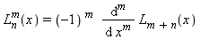
A domain error occurs if x < 0. The effect of calling
these functions is implementation-defined if n >= 128.
assoc_legendre, assoc_legendref, assoc_legendrel
double assoc_legendre(unsigned n, unsigned m, [all added with TR1]
double x);
float assoc_legendre(unsigned l, unsigned m,
float x); [C++ only]
long double assoc_legendre(unsigned l, unsigned m,
long double x); [C++ only]
float assoc_legendref(unsigned l, unsigned m,
float x);
long double assoc_legendrel(unsigned l, unsigned m,
long double x);
The functions return the associated Legendre functions of l, m, and
x, defined as:
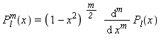
A domain error occurs if x < 0. The effect of calling
these functions is implementation-defined if l >= 128.
atan, atanf, atanldouble atan(double x); float atan(float x); [C++ only] long double atan(long double x); [C++ only] float atanf(float x); [required with C99] long double atanl(long double x); [required with C99]
The function returns the angle whose tangent is x, in the range [-pi/2, +pi/2] radians.
atan2, atan2f, atan2l
double atan2(double y, double x);
float atan2(float y, float x); [C++ only]
long double atan2(long double y, long double x); [C++ only]
float atan2f(float y, float x); [required with C99]
long double atan2l(long double y,
long double x); [required with C99]
The function returns the angle whose tangent is y/x, in the full angular range [-pi, +pi]
radians. A domain error may occur if both x and y are zero.
atanh, atanhf, atanhldouble atanh(double x); [all added with C99] float atanh(float x); [C++ only] long double atanh(long double x); [C++ only] float atanhf(float x); long double atanhl(long double x);
The function returns the hyperbolic arctangent of x. A domain error occurs if x <
-1 or +1 < x.
cbrt, cbrtf, cbrtldouble cbrt(double x); [all added with C99] float cbrt(float x); [C++ only] long double cbrt(long double x); [C++ only] float cbrtf(float x); long double cbrtl(long double x);
The function returns the real cube root of x, x^(1/3).
beta, betaf, betaldouble beta(double x, double y); [all added with TR1] float beta(float x, float y); [C++ only] long double beta(long double x, long double y); [C++ only] float betaf(float x, float y); long double betal(long double x, long double y);
The functions return the beta function of x and y, defined as:
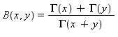
ceil, ceilf, ceilldouble ceil(double x); float ceil(float x); [C++ only] long double ceil(long double x); [C++ only] float ceilf(float x); [required with C99] long double ceill(long double x); [required with C99]
The function returns the smallest integer value not less than x.
comp_ellint_1, comp_ellint_1f, comp_ellint_1ldouble comp_ellint_1(double k); [all added with TR1] float comp_ellint_1(float k); [C++ only] long double comp_ellint_1(long double k); [C++ only] float comp_ellint_1f(float k); long double comp_ellint_1l(long double k);
The functions return the complete elliptic integral of the first kind of k, defined as
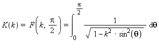
comp_ellint_2, comp_ellint_2f, comp_ellint_2ldouble comp_ellint_2(double k); [all added with TR1] float comp_ellint_2(float k); [C++ only] long double comp_ellint_2(long double k); [C++ only] float comp_ellint_2f(float k); long double comp_ellint_2l(long double k);
The functions return the complete elliptic integral of the second kind of k, defined
as:
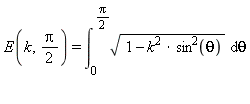
comp_ellint_3, comp_ellint_3f, comp_ellint_3ldouble comp_ellint_3(double k, double nu); [all added with TR1] float comp_ellint_3(float k, float nu); [C++ only] long double comp_ellint_3(long double k, long double nu); [C++ only] float comp_ellint_3f(float k, float nu); long double comp_ellint_3l(long double k, long double nu);
The functions return the complete elliptic integral of the third kind of k and
nu, defined as:
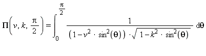
copysign, copysignf, copysignldouble copysign(double x, double y); [all added with C99] float copysign(float x, float y); [C++ only] long double copysign(long double x, long double y); [C++ only] float copysignf(float x, float y); long double copysignl(long double x, long double y);
The function returns x, with its sign bit replaced from y.
cos, cosf, cosldouble cos(double x); float cos(float x); [C++ only] long double cos(long double x); [C++ only] float cosf(float x); [required with C99] long double cosl(long double x); [required with C99]
The function returns the cosine of x. If x is large the value returned might
not be meaningful, but the function reports no error.
cosh, coshf, coshldouble cosh(double x); float cosh(float x); [C++ only] long double cosh(long double x); [C++ only] float coshf(float x); [required with C99] long double coshl(long double x); [required with C99]
The function returns the hyperbolic cosine of x.
cyl_bessel_i, cyl_bessel_if, cyl_bessel_ildouble cyl_bessel_i(double nu, double x); [all added with TR1] float cyl_bessel_i(float nu, float x); [C++ only] long double cyl_bessel_i(long double nu, long double x); [C++ only] float cyl_bessel_if(float nu, float x); long double cyl_bessel_il(long double nu, long double x);
The functions return the regular modified cylindrical Bessel functions of nu and
x, defined as:
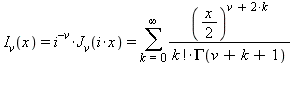
The effect of calling these functions is implementation-defined if nu >= 128.
cyl_bessel_j, cyl_bessel_jf, cyl_bessel_jldouble cyl_bessel_j(double nu, double x); [all added with TR1] float cyl_bessel_j(double nu, float x); [C++ only] long double cyl_bessel_j(long double nu, long double x); [C++ only] float cyl_bessel_jf(float nu, float x); long double cyl_bessel_jl(long double nu, long double x);
The functions return the cylindrical Bessel function of the first kind of nu and
x, defined as:
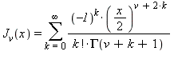
The effect of calling these functions is implementation-defined if nu >= 128.
cyl_bessel_k, cyl_bessel_kf, cyl_bessel_kldouble cyl_bessel_k(double nu, double x); [all added with TR1] float cyl_bessel_k(float nu, float x); [C++ only] long double cyl_bessel_k(long double nu, long double x); [C++ only] float cyl_bessel_kf(float nu, float x); long double cyl_bessel_kl(long double nu, long double x);
The functions return the irregular modified cylindrical Bessel function of nu and
x, defined as:
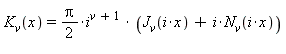
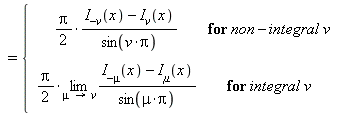
The effect of calling these functions is implementation-defined if n >= 128.
cyl_neumann, cyl_neumannf, cyl_neumannldouble cyl_neumann(double nu, double x); [all added with TR1] float cyl_neumann(float nu, float x); [C++ only] long double cyl_neumann(long double nu, long double x); [C++ only] float cyl_neumannf(float nu, float x); long double cyl_neumannl(long double nu, long double x);
The functions return the cylindrical Neumann function, also known as the cylindrical Bessel function of
the second kind, of nu and x, defined as:
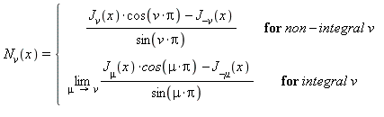
The effect of calling these functions is implementation-defined if nu >= 128.
double_ttypedef f-type double_t; [added with C99]
The type is a synonym for the floating-point type f-type, which is one of:
FLT_EVAL_METHOD is zeroFLT_EVAL_METHOD is 1FLT_EVAL_METHOD is 2Otherwise, double_t is a real floating-point type at least as wide as float_t.
ellint_1, ellint_1f, ellint_1ldouble ellint_1(double k, double phi); [all added with TR1] float ellint_1(float k, double phi); [C++ only] long double ellint_1(long double k, double phi); [C++ only] float ellint_1f(float k, double phi); long double ellint_1l(long double k, double phi);
The functions return the incomplete elliptic integral of the first kind of k and
phi, defined as:
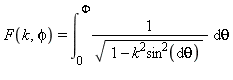
A domain error occurs if |k| > 1.
ellint_2, ellint_2f, ellint_2ldouble ellint_2(double k, double phi); [all added with TR1] float ellint_2(float k, float phi); [C++ only] long double ellint_2(long double k, long double phi); [C++ only] float ellint_2f(float k, float phi); long double ellint_2l(long double k, long double phi);
The functions return the incomplete elliptic integral of the second kind of k and
phi, defined as:
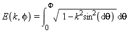
A domain error occurs if |k| > 1.
ellint_3, ellint_3f, ellint_3l
double ellint_3(double k, double nu, [all added with TR1]
double phi);
float ellint_3(float k, float nu,
float phi); [C++ only]
long double ellint_3(long double k, long double nu,
long double phi); [C++ only]
float ellint_3f(float k, float nu,
float phi);
long double ellint_3l(long double k, long double nu,
long double phi);
The functions return the incomplete elliptic integral of the third kind of k,
nu, and phi, defined as:
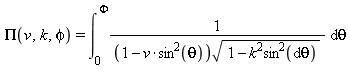
A domain error occurs if |k| > 1.
erf, erff, erfldouble erf(double x); [all added with C99] float erf(float x); [C++ only] long double erf(long double x); [C++ only] float erff(float x); long double erfl(long double x);
The function returns the error function of x.
erfc, erfcf, erfcldouble erfc(double x); [all added with C99] float erfc(float x); [C++ only] long double erfc(long double x); [C++ only] float erfcf(float x); long double erfcl(long double x);
The function returns the complementary error function of x.
exp, expf, expldouble exp(double x); float exp(float x); [C++ only] long double exp(long double x); [C++ only] float expf(float x); [required with C99] long double expl(long double x); [required with C99]
The function returns the exponential of x, e^x.
expint, expintf, expintldouble expint(double x); [all added with TR1] float expint(float x); [C++ only] long double expint(long double x); [C++ only] float expintf(float x); long double expintl(long double x);
The functions return the exponential integral of x, defined as:
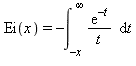
expm1, expm1f, expm1ldouble expm1(double x); [all added with C99] float expm1(float x); [C++ only] long double expm1(long double x); [C++ only] float expm1f(float x); long double expm1l(long double x);
The function returns one less than the exponential function of x, e^x - 1.
exp2, exp2f, exp2ldouble exp2(double x); [all added with C99] float exp2(float x); [C++ only] long double exp2(long double x); [C++ only] float exp2f(float x); long double exp2l(long double x);
The function returns two raised to the power x, 2^x.
fdim, fdimf, fdimldouble fdim(double x, double y); [all added with C99] float fdim(float x, float y); [C++ only] long double fdim(long double x, long double y); [C++ only] float fdimf(float x, float y); long double fdiml(long double x, long double y);
The function returns the larger of x - y and zero.
float_ttypedef f-type float_t; [added with C99]
The type is a synonym for the floating-point type f-type, which is one of:
FLT_EVAL_METHOD is zeroFLT_EVAL_METHOD is 1FLT_EVAL_METHOD is 2Otherwise, float_t is a real floating-point type not wider than double_t.
floor, floorf, floorldouble floor(double x); float floor(float x); [C++ only] long double floor(long double x); [C++ only] float floorf(float x); [required with C99] long double floorl(long double x); [required with C99]
The function returns the largest integer value not greater than x.
fma, fmaf, fmaldouble fma(double x, double y, double z); [all added with C99] float fma(float x, float y, float z); [C++ only] long double fma(long double x, long double y, long double z); [C++ only] float fmaf(float x, float y, float z); long double fmal(long double x, long double y, long double z);
The function returns x * y + z, to arbitrary intermediate precision.
fmax, fmaxf, fmaxldouble fmax(double x, double y); [all added with C99] float fmax(float x, float y); [C++ only] long double fmax(long double x, long double y); [C++ only] float fmaxf(float x, float y); long double fmaxl(long double x, long double y);
The function returns the larger (more positive) of x and y.
fmin, fminf, fminldouble fmin(double x, double y); [all added with C99] float fmin(float x, float y); [C++ only] long double fmin(long double x, long double y); [C++ only] float fminf(float x, float y); long double fminl(long double x, long double y);
The function returns the smaller (more negative) of x and y.
fmod, fmodf, fmodl
double fmod(double x, double y);
float fmod(float x, float y); [C++ only]
long double fmod(long double x, long double y); [C++ only]
float fmodf(float x, float y); [required with C99]
long double fmodl(long double x,
long double y); [required with C99]
The function returns the remainder of x/y, which is defined as follows:
y is zero, the function either reports a domain error or simply returns zero.i such that the
returned value x - i * y has the same sign as x and magnitude less than
|y|.fpclassify#define fpclassify(x) <int rvalue> [added with C99, int functions in C++]
The generic-function macro accepts an rvalue argument
x of some real floating-point type and evaluates to:
FP_INFINITE for an argument that is positive or negative
infinityFP_NAN for an argument that is not-a-number (NaN)FP_NORMAL for an argument that is finite and normalizedFP_SUBNORMAL for an argument that is finite and
denormalizedFP_ZERO for an argument that is positive or negative zeroor possibly some other implementation-defined value.
FP_FAST_FMA#define FP_FAST_FMA <integer constant expression> [optional with C99]
The macro is defined only if the call fma(x, y, z) executes about as
fast as the double expression x * y + z.
FP_FAST_FMAF#define FP_FAST_FMAF <integer constant expression> [optional with C99]
The macro is defined only if the call fmaf(x, y, z) executes about as
fast as the float expression x * y + z.
FP_FAST_FMAL#define FP_FAST_FMAL <integer constant expression> [optional with C99]
The macro is defined only if the call fmal(x, y, z) executes about as
fast as the long double expression x * y + z.
FP_ILOGB0#define FP_ILOGB0 <integer constant expression> [added with C99]
The macro defines the value returned by ilogb for an argument that is
positive or negative zero. The value of the macro is either INT_MIN or -INT_MAX.
FP_ILOGBNAN#define FP_ILOGBNAN <integer constant expression> [added with C99]
The macro defines the value returned by ilogb for an argument that is
not-a-number (NaN). The value of the macro is either INT_MIN
or INT_MAX.
FP_INFINITE#define FP_INFINITE <integer constant expression> [added with C99]
The macro defines the value of the macro fpclassify for an
argument that is positive or negative infinity.
FP_NAN#define FP_NAN <integer constant expression> [added with C99]
The macro defines the value of the macro fpclassify for an
argument that is not-a-number (NaN).
FP_NORMAL#define FP_NORMAL <integer constant expression> [added with C99]
The macro defines the value of the macro fpclassify for an
argument that is finite and normalized.
FP_SUBNORMAL#define FP_SUBNORMAL <integer constant expression> [added with C99]
The macro defines the value of the macro fpclassify for an
argument that is finite and denormalized.
FP_ZERO#define FP_ZERO <integer constant expression> [added with C99]
The macro defines the value of the macro fpclassify for an
argument that is positive or negative zero.
frexp, frexpf, frexpldouble frexp(double x, int *pexp); float frexp(float x, int *pexp); [C++ only] long double frexp(long double x, int *pexp); [C++ only] float frexpf(float x, int *pexp); [required with C99] long double frexpl(long double x, int *pexp); [required with C99]
The function determines a fraction frac and an exponent integer ex that
represent the value of x. It returns the value frac and stores the integer
ex in *pexp, such that:
|frac| is in the interval [1/2, 1) or is zerox == frac * 2^exIf x is zero, *pexp is also zero.
hermite, hermitef, hermiteldouble hermite(unsigned n, double x); [all added with TR1] float hermite(unsigned n, float x); [C++ only] long double hermite(unsigned n, long double x); [C++ only] float hermitef(unsigned n, float x); long double hermitel(unsigned n, long double x);
The functions return the Hermite polynomial of n and x, defined as:
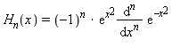
The effect of calling these functions is implementation-defined if n >= 128.
HUGE_VAL#define HUGE_VAL <double rvalue>
The macro yields the double value returned by some functions on a range error. The value can be a representation of infinity.
HUGE_VALF#define HUGE_VALF <float rvalue> [added with C99]
The macro yields the float value returned by some functions on a range error. The value can be a representation of infinity.
HUGE_VALL#define HUGE_VALL <long double rvalue> [added with C99]
The macro yields the long double value returned by some functions on a range error. The value can be a representation of infinity.
hypot, hypotf, hypotldouble hypot(double x, double y); [all added with C99] float hypot(float x, float y); [C++ only] long double hypot(long double x, long double y); [C++ only] float hypotf(float x, float y); long double hypotl(long double x, long double y);
The function returns the square root of x^2 + y^2.
ilogb, ilogbf, ilogblint ilogb(double x); [all added with C99] int ilogb(float x); [C++ only] int ilogb(long double x); [C++ only] int ilogbf(float x); int ilogbl(long double x);
The function returns:
x not-a-number (NaN), the value of the macro FP_ILOGBNANx equal to zero, the value of the macro FP_ILOGB0x equal to positive or negative infinity, the value of the macro INT_MAXOtherwise, it returns (int)logb(x).
INFINITY#define INFINITY <float rvalue> [added with C99]
The macro yields a float value that represents positive infinity.
isfinite#define isfinite(x) <int rvalue> [added with C99, bool functions in C++]
The generic-function macro accepts an rvalue argument
x of some real floating-point type and yields a nonzero value only if x is
finite.
isgreater#define isgreater(x, y) <int rvalue> [added with C99, bool functions in C++]
The generic-function macro accepts two rvalue arguments
x and y, at least one of which is a real floating-point type, and yields the
value 1 only if x > y and neither x nor y is not-a-number (NaN).
Otherwise, it yields the value zero. The macro never raises an invalid floating-point exception.
isgreaterequal#define isgreaterequal(x, y) <int rvalue> [added with C99, bool functions in C++]
The generic-function macro accepts two rvalue arguments
x and y, at least one of which is a real floating-point type, and yields the
value 1 only if x >= y and neither x nor y is not-a-number (NaN).
Otherwise, it yields the value zero. The macro never raises an invalid floating-point exception.
isinf#define isinf(x) <int rvalue> [added with C99, bool functions in C++]
The generic-function macro accepts an rvalue argument
x of some real floating-point type and yields a nonzero value only if x is
positive or negative infinity.
isless#define isless(x, y) <int rvalue> [added with C99, bool functions in C++]
The generic-function macro accepts two rvalue arguments
x and y, at least one of which is a real floating-point type, and yields the
value 1 only if x < y and neither x nor y is not-a-number (NaN).
Otherwise, it yields the value zero. The macro never raises an invalid floating-point exception.
islessequal#define islessequal(x, y) <int rvalue> [added with C99, bool functions in C++]
The generic-function macro accepts two rvalue arguments
x and y, at least one of which is a real floating-point type, and yields the
value 1 only if x <= y and neither x nor y is not-a-number (NaN).
Otherwise, it yields the value zero. The macro never raises an invalid floating-point exception.
islessgreater#define islessgreater(x, y) <int rvalue> [added with C99, bool functions in C++]
The generic-function macro accepts two rvalue arguments
x and y, at least one of which is a real floating-point type, and yields the
value 1 only if x < y || x > y and neither x nor y is
not-a-number (NaN). Otherwise, it yields the value zero. The macro never raises an invalid floating-point exception.
isnan#define isnan(x) <int rvalue> [added with C99, bool functions in C++]
The generic-function macro accepts an rvalue argument
x of some real floating-point type and yields a nonzero value only if x is
not-a-number (NaN).
isnormal#define isnormal(x) <int rvalue> [added with C99, bool functions in C++]
The generic-function macro accepts an rvalue argument
x of some real floating-point type and yields a nonzero value only if x is finite
and normalized.
isunordered#define isunordered(x, y) <int rvalue> [added with C99, bool functions in C++]
The generic-function macro accepts two rvalue arguments
x and y, at least one of which is a real floating-point type, and yields the
value 1 only if at least one of the two arguments is not-a-number (NaN). Otherwise, it yields the value
zero. The macro never raises an invalid floating-point
exception.
laguerre, laguerref, laguerreldouble laguerre(unsigned n, double x); [all added with TR1] float laguerre(unsigned n, float x); [C++ only] long double laguerre(unsigned n, long double x); [C++ only] float laguerref(unsigned n, float x); long double laguerrel(unsigned n, long double x);
The functions return the Laguerre polynomial of n and x, defined as:
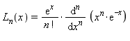
A domain error occurs if x < 0. The effect of calling
these functions is implementation-defined if n >= 128.
ldexp, ldexpf, ldexpldouble ldexp(double x, int ex); float ldexp(float x, int ex); [C++ only] long double ldexp(long double x, int ex); [C++ only] float ldexpf(float x, int ex); [required with C99] long double ldexpl(long double x, int ex); [required with C99]
The function returns x * 2^ex.
legendre, legendref, legendreldouble legendre(unsigned l, double x); [all added with TR1] float legendre(unsigned l, float x); [C++ only] long double legendre(unsigned l, long double x); [C++ only] float legendref(unsigned l, float x); long double legendrel(unsigned l, long double x);
The functions return the Legendre polynomial of l and x, defined as:
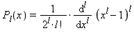
The effect of calling these functions is implementation-defined if l >= 128.
lgamma, lgammaf, lgammaldouble lgamma(double x); [all added with C99] float lgamma(float x); [C++ only] long double lgamma(long double x); [C++ only] float lgammaf(float x); long double lgammal(long double x);
The function returns the natural logarithm of the absolute value of the gamma function of
x.
llrint, llrintf, llrintllong long llrint(double x); [all added with C99] long long llrint(float x); [C++ only] long long llrint(long double x); [C++ only] long long llrintf(float x); long long llrintl(long double x);
The function returns the nearest long long integer to x, consistent with the current
rounding mode. It raises an invalid floating-point exception if the magnitude of the rounded
value is too large to represent. And it raises an inexact
floating-point exception if the return value does not equal x.
llround, llroundf, llroundllong long llround(double x); [all added with C99] long long llround(float x); [C++ only] long long llround(long double x); [C++ only] long long llroundf(float x); long long llroundl(long double x);
The function returns the nearest long long integer to x, rounding halfway values
away from zero, regardless of the current rounding mode.
log, logf, logldouble log(double x); float log(float x); [C++ only] long double log(long double x); [C++ only] float logf(float x); [required with C99] long double logl(long double x); [required with C99]
The function returns the natural logarithm of x. A domain error occurs if x <
0.
log10, log10f, log10ldouble log10(double x); float log10(float x); [C++ only] long double log10(long double x); [C++ only] float log10f(float x); [required with C99] long double log10l(long double x); [required with C99]
The function returns the base-10 logarithm of x. A domain error occurs if x <
0.
log1p, log1pf, log1pldouble log1p(double x); [all added with C99] float log1p(float x); [C++ only] long double log1p(long double x); [C++ only] float log1pf(float x); long double log1pl(long double x);
The function returns the natural logarithm of 1 + x. A domain error occurs if x <
-1.
log2, log2f, log2ldouble log2(double x); [all added with C99] float log2(float x); [C++ only] long double log2(long double x); [C++ only] float log2f(float x); long double log2l(long double x);
The function returns the base-2 logarithm of x. A domain error occurs if x <
0.
logb, logbf, logbldouble logb(double x); [all added with C99] float logb(float x); [C++ only] long double logb(long double x); [C++ only] float logbf(float x); long double logbl(long double x);
The function determines an integer exponent ex and a fraction frac that
represent the value of a finite x. It returns the value ex such that:
x == frac * FLT_RADIX^ex|frac| is in the interval [1, FLT_RADIX)A domain error may occur if x is zero.
lrint, lrintf, lrintllong lrint(double x); [all added with C99] long lrint(float x); [C++ only] long lrint(long double x); [C++ only] long lrintf(float x); long lrintl(long double x);
The function returns the nearest long integer to x, consistent with the current
rounding mode. It raises an invalid floating-point exception if the magnitude of the rounded
value is too large to represent. And it raises an inexact
floating-point exception if the return value does not equal x.
lround, lroundf, lroundllong lround(double x); [all added with C99] long lround(float x); [C++ only] long lround(long double x); [C++ only] long lroundf(float x); long lroundl(long double x);
The function returns the nearest long integer to x, rounding halfway values away
from zero, regardless of the current rounding mode.
MATH_ERRNO#define MATH_ERRNO 1 [added with C99]
The macro yields the value 1. It is used for testing the value of the macro math_errhandling to determine whether a math function reports an error by
storing a nonzero value in errno.
MATH_ERREXCEPT#define MATH_ERREXCEPT 2 [added with C99]
The macro yields the value 2. It is used for testing the value of the macro math_errhandling to determine whether a math function reports an error by
raising an invalid floating-point exception.
math_errhandling#define math_errhandling <int rvalue [0, 4)> [added with C99]
The macro specifies how math functions report a domain error or a range error. Specifically:
(math_errhandling & MATH_ERRNO) != 0 then the math
function stores a nonzero value in errno and returns a
particular value that characterizes the error.(math_errhandling & MATH_ERREXCEPT) != 0 then the
math function raises an invalid floating-point
exception. In this case, the macros FE_DIVBYZERO,
FE_INVALID, and FE_OVERFLOW are all defined.The value of the macro remains unchanged during program execution.
modf, modff, modfl
double modf(double x, double *pint);
float modf(float x, float *pint); [C++ only]
long double modf(long double x,
long double *pint); [C++ only]
float modff(float x, float *pint); [required with C99]
long double modfl(long double x,
long double *pint); [required with C99]
The function determines an integer i plus a fraction frac that represent the
value of x. It returns the value frac and stores the integer i in
*pint, such that:
x == frac + i|frac| is in the interval [0, 1)frac and i have the same sign as xNAN#define NAN <float rvalue> [added with C99]
The macro yields a float value that represents not-a-number (NaN).
nan, nanf, nanldouble nan(const char *str); [all added with C99] float nanf(const char *str); long double nanl(const char *str);
The function converts a null-terminated sequence beginning at str to a not-a-number (NaN)
code. Specifically, the call nan("n-char-seq") effectively returns strtod("NAN(n-char-seq)", (char**)0) if the conversion succeeds; otherwise
it returns strtod("NAN").
nearbyint, nearbyintf,
nearbyintldouble nearbyint(double x); [all added with C99] float nearbyint(float x); [C++ only] long double nearbyint(long double x); [C++ only] float nearbyintf(float x); long double nearbyintl(long double x);
The function returns x rounded to the nearest integer, consistent with the current rounding mode but without raising an inexact floating-point exception.
nextafter, nextafterf,
nextafterldouble nextafter(double x, double y); [all added with C99] float nextafter(float x, float y); [C++ only] long double nextafter(long double x, long double y); [C++ only] float nextafterf(float x, float y); long double nextafterl(long double x, long double y);
The function returns:
x < y, the next representable value after xx == y, yx > y, the next representable value before xnexttoward, nexttowardf,
nexttowardldouble nexttoward(double x, long double y); [all added with C99] float nexttoward(float x, long double y); [C++ only] long double nexttoward(long double x, long double y); [C++ only] float nexttowardf(float x, long double y); long double nexttowardl(long double x, long double y);
The function returns:
x < y, the next representable value after xx == y, yx > y, the next representable value before xpow, powf, powl
double pow(double x, double y);
float pow(float x, float y); [C++ only]
long double pow(long double x, long double y); [C++ only]
float powf(float x, float y); [required with C99]
long double powl(long double x,
long double y); [required with C99]
The function returns x raised to the power y, x^y.
remainder, remainderf,
remainderldouble remainder(double x, double y); [all added with C99] float remainder(float x, float y); [C++ only] long double remainder(long double x, long double y); [C++ only] float remainderf(float x, float y); long double remainderl(long double x, long double y);
The function effectively returns remquo(x, y, &temp), where
temp is a temporary object of type int local to the function.
remquo, remquof, remquoldouble remquo(double x, double y, int *pquo); [all added with C99] float remquo(float x, float y, int *pquo); [C++ only] long double remquo(long double x, long double y, int *pquo); [C++ only] float remquof(float x, float y, int *pquo); long double remquol(long double x, long double y, int *pquo);
The function computes the remainder rem == x - n*y, where n == x/y rounded to
the nearest integer, or to the nearest even integer if |n - x/y| == 1/2. If rem
is zero, it has the same sign as x. A domain error occurs if y is zero.
The function stores in *pquo at least three of the low-order bits of |x/y|,
negated if x/y < 0. It returns rem.
riemann_zeta, riemann_zetaf, riemann_zetaldouble riemann_zeta(double x); [all added with TR1] float riemann_zeta(float x); [C++ only] long double riemann_zeta(long double x); [C++ only] float riemann_zetaf(float x); long double riemann_zetal(long double x);
The functions return the Riemann zeta function of x, defined as:
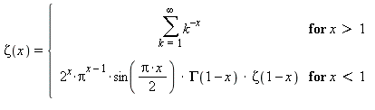
rint, rintf, rintldouble rint(double x); [all added with C99] float rint(float x); [C++ only] long double rint(long double x); [C++ only] float rintf(float x); long double rintl(long double x);
The function returns x rounded to the nearest integer, using the current rounding mode. It may raise an inexact floating-point exception if the return value does not
equal x.
round, roundf, roundldouble round(double x); [all added with C99] float round(float x); [C++ only] long double round(long double x); [C++ only] float roundf(float x); long double roundl(long double x);
The function returns x rounded to the nearest integer n, or to the value with
larger magnitude if |n - x| == 1/2.
scalbln, scalblnf, scalblnldouble scalbln(double x, long ex); [all added with C99] float scalbln(float x, long ex); [C++ only] long double scalbln(long double x, long ex); [C++ only] float scalblnf(float x, long ex); long double scalblnl(long double x, long ex);
The function returns x * FLT_RADIX^ex.
scalbn, scalbnf, scalbnldouble scalbn(double x, int ex); [all added with C99] float scalbn(float x, int ex); [C++ only] long double scalbn(long double x, int ex); [C++ only] float scalbnf(float x, int ex); long double scalbnl(long double x, int ex);
The function returns x * FLT_RADIX^ex.
signbit#define signbit(x) <int rvalue> [added with C99, bool functions in C++]
The generic-function macro accepts an rvalue argument
x of some real floating-point type and yields a nonzero value only if the (negative) sign bit
of x is set. The macro never raises an invalid
floating-point exception.
sin, sinf, sinldouble sin(double x); float sin(float x); [C++ only] long double sin(long double x); [C++ only] float sinf(float x); [required with C99] long double sinl(long double x); [required with C99]
The function returns the sine of x. If x is large the value returned might not
be meaningful, but the function reports no error.
sinh, sinhf, sinhldouble sinh(double x); float sinh(float x); [C++ only] long double sinh(long double x); [C++ only] float sinhf(float x); [required with C99] long double sinhl(long double x); [required with C99]
The function returns the hyperbolic sine of x.
sph_bessel, sph_besself,
sph_besselldouble sph_bessel(unsigned n, double x); [all added with TR1] float sph_bessel(unsigned n, float x); [C++ only] long double sph_bessel(unsigned n, long double x); [C++ only] float sph_besself(unsigned n, float x); long double sph_bessell(unsigned n, long double x);
The functions return the spherical Bessel function of the first kind of n and
x, defined as:
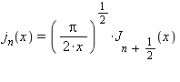
The effect of calling these functions is implementation-defined if n >= 128.
sph_legendre, sph_legendref, sph_legendrel
double sph_legendre(unsigned l, unsigned m, [all added with TR1]
double theta);
float sph_legendre(unsigned l, unsigned m,
float theta); [C++ only]
long double sph_legendre(unsigned l, unsigned m,
long double theta); [C++ only]
float sph_legendref(unsigned l, unsigned m,
float theta);
long double sph_legendrel(unsigned l, unsigned m,
long double theta);
The functions return the spherical associated Legendre function of l, m, and
theta, defined as:
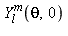
where
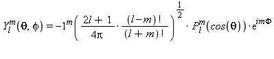
The effect of calling these functions is implementation-defined if l >= 128.
sph_neumann, sph_neumannf, sph_neumannldouble sph_neumann(unsigned n, double x); [all added with TR1] float sph_neumann(unsigned n, float x); [C++ only] long double sph_neumann(unsigned n, long double x); [C++ only] float sph_neumannf(unsigned n, float x); long double sph_neumannl(unsigned n, long double x);
The functions return the spherical Neumann function, also known as the spherical Bessel function of the
second kind, of n and x, defined as:
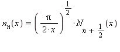
The effect of calling these functions is implementation-defined if n >= 128.
sqrt, sqrtf, sqrtldouble sqrt(double x); float sqrt(float x); [C++ only] long double sqrt(long double x); [C++ only] float sqrtf(float x); [required with C99] long double sqrtl(long double x); [required with C99]
The function returns the real square root of x, x^(1/2). A domain error occurs
if x < 0.
tan, tanf, tanldouble tan(double x); float tan(float x); [C++ only] long double tan(long double x); [C++ only] float tanf(float x); [required with C99] long double tanl(long double x); [required with C99]
The function returns the tangent of x. If x is large the value returned might
not be meaningful, but the function reports no error.
tanh, tanhf, tanhldouble tanh(double x); float tanh(float x); [C++ only] long double tanh(long double x); [C++ only] float tanhf(float x); [required with C99] long double tanhl(long double x); [required with C99]
The function returns the hyperbolic tangent of x.
tgamma, tgammaf, tgammaldouble tgamma(double x); [all added with C99] float tgamma(float x); [C++ only] long double tgamma(long double x); [C++ only] float tgammaf(float x); long double tgammal(long double x);
The function computes the gamma function of x. A domain error occurs if x is a
negative integer.
trunc, truncf, truncldouble trunc(double x); [all added with C99] float trunc(float x); [C++ only] long double trunc(long double x); [C++ only] float truncf(float x); long double truncl(long double x);
The function returns x rounded to the nearest integer n not larger in
magnitude than x (toward zero).
See also the Table of Contents and the Index.
Copyright © 1992-2010 by P.J. Plauger and Jim Brodie. All rights reserved.